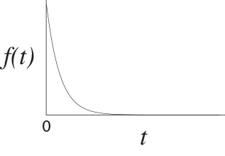
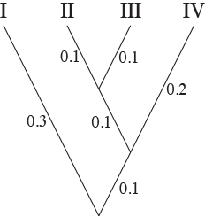

In this tutorial, you will develop an intuition for continuous-time Markov models used to describe how DNA sequences evolve along a phylogenetic tree. To this end, you will implement an algorithm simulating sequence evolution along a branch.
We will use RevBayes interactively by typing commands in the command-line console. One can either use RevBayes interactively or run an entire script. To execute the RevBayes binary, if this program is in your path, then you can simply type in your Unix terminal:
rb
When you execute the program, you will see a brief program information, including the current version number. Remember that more information can be obtained from revbayes.github.io. When you execute the program with an additional filename, e.g.,
rb my_analysis.Rev
then RevBayes will run all commands specified in the file my_analysis.Rev.
In this tutorial, you will develop an intuition for continuous-time Markov models used to describe how DNA sequences evolve along a phylogenetic tree. These models most often assume that each site evolves independently of the other sites in the sequences. This assumption is very convenient: once one knows how to simulate the evolution of a single site, one just repeats the same process over and over again, and in the end, $voilà$, one has simulated the evolution of homologous sequences. In this tutorial we will focus on DNA sequences, but the same approach is used in models of codon or protein sequence evolution, as well as in models that describe the evolution of discrete characters. Our work will be to model the evolution of a DNA sequence along a branch, not along an entire tree. However, once one knows how to simulate along a branch, simulating along a tree is not difficult conceptually. Simulating along a tree will therefore be left as an exercise to the reader.
Simulations will be implemented in the rev language, and run in RevBayes. We assume that you have successfully installed RevBayes. If this isn’t the case, then please consult the website on how to install RevBayes.
In this section, we first define our hypotheses for the model of character evolution, then we express them mathematically and use the rev language to implement them, and finally articulate them together into an algorithm to simulate the evolution of a site along a branch.
We want to model how one site of a DNA sequence evolves through time. It starts in a DNA state $A$, $C$, $G$, or $T$, and undergoes mutations through time. Because we want a simple model for this tutorial, we are going to make a few hypotheses. First (hypothesis 1), we are going to assume that the rate of change is constant through time. This means that, in every small time interval $dt$, we have the same rate of change. In the literature, this hypothesis is often used to model sequence evolution along a branch. Second (hypothesis 2), we are going to assume that all types of changes between characters have the same rate: the rate of change from $A$ to $C$ is the same as from $C$ to $A$, $G$ to $T$, etc. . In the literature, this hypothesis is made in the Jukes and Cantor model, proposed in 1969. More recent models are less naive: for instance they allow for different rates for transitions and transversions, and allow for different equilibrium frequencies for the bases $A$, $C$, $G$, and $T$. Those equilibrium frequencies correspond to the base frequencies one would obtain after simulating a large number of sites over a long (infinite) amount of time. Third (hypothesis 3), we are going to assume that the starting state ($A$, $C$, $G$, or $T$) is drawn randomly. For consistency with our choice to use the Jukes and Cantor model, we are going to assume that all possible bases are equally likely: each has a $25\%$ chance to be drawn.
Now that we have explicited our three hypotheses, we need to turn them into a probabilistic model. Hypothesis 3 means that we want to draw our initial state from a discrete uniform distribution with 4 states:
\[f(state, minValue, maxValue) = \frac{1}{maxValue - minValue}\]This distribution draws each of the four states (integers between 1 and 4) with the same probability $1/4=0.25$.
In RevBayes, we can do that using:
rUniformInteger(n=1, lower=1, upper=4)
This functions draws a single integer between 1 and 4.
Hypothesis 2 means that, when a change occurs, there is an equal probability to move from the starting state to any of the three other states. To make our life simpler, we are going to allow that we pick the same starting state, $i.e.$ we allow changes from state $x$ to the same state $x$. As a result we can use the same distribution as above.
Finally, we need to be able to draw waiting times between changes, given the constant rate that we assumed in hypothesis 1. In this case, the exponential distribution is appropriate. The exponential distribution looks like

\[f(waitingTime, \lambda) = \lambda exp^{-\lambda x}\]To simulate a random draw from the exponential distribution in RevBayes, one can use:
rexp(n=1, lambda=0.5)
This function draws a waiting time given a rate of occurrence of 0.5.
vec = v(5)
vec.append(3)
print(vec)
vec.methods()
vec2 = rep(x=5, n=2)
print(vec2)
help(vec2)
?v
And you may also want for loops:
for (i in range 1:5) { print(i) }
It is also possible to export the contents of a vector to a file:
write(vec, file="simulatedUnif.txt")
One can then read the file in R, provided some formatting has been done. For instance:
## In the terminal, convert the output file into a format that R will be able to read:
sed 's/\[//g' simulatedUnif.txt | sed 's/\]//g' | sed 's/\,/\n/g' | sed 's/ //g' > simulatedUnifForR.txt
##########
## In R, read the data
simulatedValues=read.table("simulatedUnifForR.txt", h=F)$V1
What is the expected waiting time? You could answer this question by simulating
a large number of waiting times and computing the average value (with the
function mean). What is the link between the \lambda rate value and the average
waiting time?
Draw a large number of waiting times and plot a histogram of them using R. Compare the histogram to an exponential distribution.
Now that we have defined the probability distributions used in our simulation, we can use them together in a simulation algorithm, that we are going to implement in the rev language.
We want to simulate over the length of the branch, which we name branch_length.
This branch length is specified $a priori$ (it is a parameter of the simulation
procedure). The rate of evolution is also specified $a priori$ and is named rate.
Let’s say, for instance:
branchLength = 10
rate = 0.5
The idea of the algorithm is that we start from time $0$ and progress along the branch until its end, changing state after waiting times drawn from an exponential distribution.
To write the simulation program, we first need a chronometer, which we
represent by a variable currentTime.
We start the simulation by setting ‘current_time’ to 0:
currentTime = 0
Second, we need a variable that stores the current nucleotide state. We call
this variable currentState. We set this variable by drawing the initial state
according to hypothesis 3:
currentState = rUniformInteger…
Then we simulate the successive events of state changes. Importantly, we don’t know $a priori$ how many substitution events we will have: it all depends on the waiting times drawn randomly from our exponential distribution. As a result, we need to use a while loop:
while (currentTime < branchLength) {
…
}
Within this while loop, we will write the sequence of simulation steps that we need to repeat until the chronometer has reached the total time branch_length. This sequence is as follows:
waitingTime to the next event from an
exponential:
waitingTime = rexp …
waitingTime to
currentTime.
currentTime = currentTime + waitingTime
currentState <- …
Because it is in the while loop, this procedure (from drawing the waiting time
until setting the new current state) will run until the chronometer
currentTime has passed total time branchLength.
By implementing these steps, we obtain an algorithm that simulates the evolution of a single site.
while loop in the rev language:i = 0
while (i <5) {
print(i)
i = i + 1
}
You may also want to store or print variables in the while loop to keep a trace of what’s happening.
Finally you may find it useful to define a function, as in:
function RealPos square (Real x) {x*x}
In the above, we have implemented an algorithm to simulate the evolution of a site along a branch. We can build upon this algorithm to simulate the evolution of a site along an entire tree, for instance like this tree:

To do this, one has to realize that a tree is made of several individual branches. The algorithm to simulate along a tree would thus do something like this:
It might help you to think about the following question: if a site ends its evolution on parent branch $parentBranch$ in state $x$, in what state should it start its evolution along the two children branches $leftChild$ and $rightChild$?